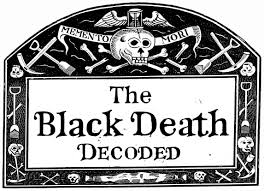
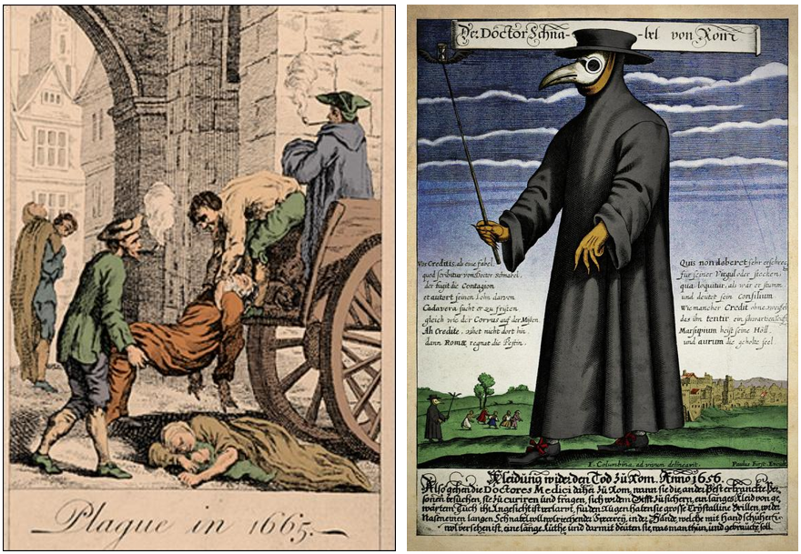
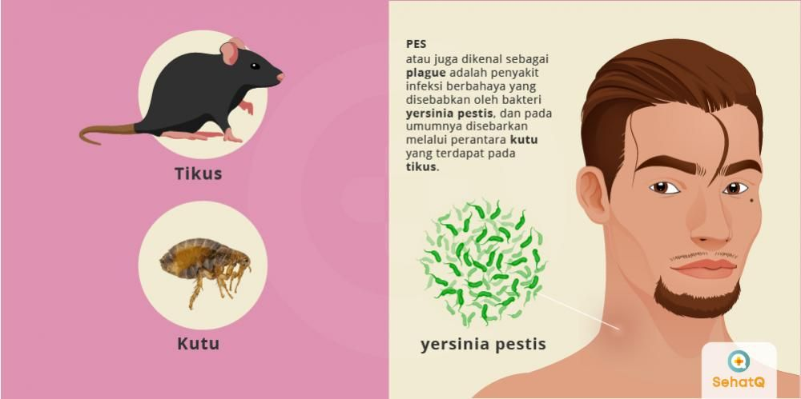

Black Death
Maut Hitam, disebut juga Wabah Hitam atau Black Death, adalah suatu pandemi hebat yang pertama kali melanda Eropa pada pertengahan hingga akhir abad ke-14 (1347 – 1351) dan membunuh sepertiga hingga dua pertiga populasi Eropa.
Pada saat yang hampir bersamaan, terjadi pula epidemi pada sebagian besar Asia dan Timur Tengah, yang menunjukkan bahwa peristiwa di Eropa sebenarnya merupakan bagian dari pandemi multiregional. Jika termasuk Timur Tengah, India, dan Tiongkok, Maut Hitam telah merenggut sedikitnya 75 juta nyawa.
Penyakit yang sama diduga kembali melanda Eropa pada setiap generasi dengan perbedaan intensitas dan tingkat fatalitas yang berbeda hingga abad 1700-an.

Dokter-dokter pada masa Black Death dikatakan memakai kostum dengan jubah hitam panjang. Bagian mata terbuka karena adanya lubang pada kostum yang digunakan. Mereka juga membawa tongkat kayu untuk mencegah interaksi secara langsung dengan pasien. Sementara bagian masker, ada moncong mirip paruh burung yang ternyata memiliki tujuan khusus.
Mengutip Live Science, Plague Doctor mengisi masker mereka dengan theriac, senyawa yang terdiri lebih dari 55 tumbuhan dan komponen lain seperti kayu manis dan madu. De Lorme berpendapat, bentuk paruh pada masker akan memberi udara cukup waktu untuk disaring oleh tumbuhan pelindung sebelum masuk ke lubang hidung dan paru-paru.

Faktanya, wabah ini disebabkan oleh Yersinia pestis, bakteri yang dapat ditularkan dari hewan ke manusia dan melalui gigitan kutu, kontak dengan cairan atau jaringan yang terkontaminasi, juga lewat menghirup tetesan infeksi dari bersin atau batuk orang. Serta, perlindungan dari kostum Plague Doctor sendiri sebenarnya belum cukup melindungi mereka dari risiko paparan penyakit ini.
Beberapa wabah penting yang muncul kemudian antara lain Wabah Italia (1629 – 1631), Wabah Besar London (1665 – 1666), Wabah Besar Wina (1679), Wabah Besar Marseille (1720 – 1722), serta wabah pada tahun 1771 di Moskwa. Penyakit ini berhasil dimusnahkan di Eropa pada awal abad ke-19, tetapi masih berlanjut pada bagian lain dunia (Afrika Tengah dan Oriental, Madagaskar, Asia, beberapa bagian Amerika Selatan).

Maut Hitam menimbulkan akibat drastis terhadap populasi Eropa, serta mengubah struktur sosial Eropa. Wabah ini mengakibatkan perburuan dan pembunuhan terhadap kaum minoritas seperti Yahudi, pendatang, pengemis, serta penderita lepra. Ketidakpastian untuk tetap bertahan hidup menciptakan suatu kecenderungan yang tak sehat pada masyarakat untuk hidup hanya untuk hari ini, seperti digambarkan oleh Giovanni Boccaccio pada The Decameron (1353).